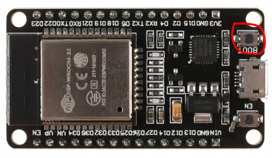

MixR - Do it by yourself
Below we present full instructions on how to make your own device step by step. The whole process does not take long, so it can be done in one evening.

Below we present full instructions on how to make your own device step by step. The whole process does not take long, so it can be done in one evening.
Link: AliExpress
Link: AliExpress
Link: AliExpress
- 12 pcs. M2 screws, preferably M2*5
- 4 pcs. M3 screws
To build MixR YOU DON'T NEED YOUR OWN 3D PRINTER. All parts with the housing can be purchased online, but by printing them we reduce costs.
Model to download HERE
If someone does not have a printer, the case can be purchased at this LINK
Model to download HERE
The caps can be purchased at this LINK
Model to download HERE [More information in the next chapter]
The keycaps can be purchased at this LINK
If you don't want to print buttons, you can skip this section ;)
On the website you can download three types of keycaps (5, 10 and 15 degrees of inclination) and the stencils.

Here you have an instruction video for this::
Installation can be started from the top of the housing. Press the switches into the square holes. They should fit perfectly, and when inserting a snap.
Then insert the potentiometers from the back and screw them with M2*5 screws.
Prepare the ESP-32S board for soldering. Personally, I recommend desoldering the header pins that are included, because then it will be easier to solder all the wires.
Scheme in PDF file: DOWNLOAD
Connect the wires as in the diagram above. Each switch has its own separate wire. Additionally, there is one common ground that can be connected from button to button. The same is true for a common wire for powering potentiometers
Once all the wires are soldered, you can screw the board to the bottom of the housing.

#include <stdint.h>
#include <Arduino.h>
uint8_t btn_prev_12;
uint8_t btn_prev_13;
uint8_t btn_prev_14;
uint8_t btn_prev_25;
uint8_t btn_prev_26;
uint8_t btn_prev_27;
uint16_t slider_32;
uint16_t slider_33;
uint16_t slider_34;
uint16_t slider_35;
uint16_t slider_36;
uint16_t slider_39;
uint16_t slider_new_32;
uint16_t slider_new_33;
uint16_t slider_new_34;
uint16_t slider_new_35;
uint16_t slider_new_36;
uint16_t slider_new_39;
float limit = 0.9;
void setup() {
Serial.begin(115200);
pinMode(12, INPUT_PULLUP);
pinMode(13, INPUT_PULLUP);
pinMode(14, INPUT_PULLUP);
pinMode(25, INPUT_PULLUP);
pinMode(26, INPUT_PULLUP);
pinMode(27, INPUT_PULLUP);
pinMode(32, INPUT_PULLUP);
pinMode(33, INPUT_PULLUP);
pinMode(34, INPUT_PULLUP);
pinMode(35, INPUT_PULLUP);
pinMode(36, INPUT_PULLUP);
pinMode(39, INPUT_PULLUP);
btn_prev_12 = digitalRead(12);
btn_prev_13 = digitalRead(13);
btn_prev_14 = digitalRead(14);
btn_prev_25 = digitalRead(25);
btn_prev_26 = digitalRead(26);
btn_prev_27 = digitalRead(27);
slider_32 = analogRead(32);
slider_33 = analogRead(33);
slider_34 = analogRead(34);
slider_35 = analogRead(35);
slider_36 = analogRead(36);
slider_39 = analogRead(39);
}
void loop() {
delay(150); // this speeds up the simulation
if (digitalRead(12) == LOW && btn_prev_12 == HIGH) {
Serial.println(2);
}
btn_prev_12 = digitalRead(12);
if (digitalRead(13) == LOW && btn_prev_13 == HIGH) {
Serial.println(1);
}
btn_prev_13 = digitalRead(13);
if (digitalRead(14) == LOW && btn_prev_14 == HIGH) {
Serial.println(4);
}
btn_prev_14 = digitalRead(14);
if (digitalRead(25) == LOW && btn_prev_25 == HIGH) {
Serial.println(3);
}
btn_prev_25 = digitalRead(25);
if (digitalRead(26) == LOW && btn_prev_26 == HIGH) {
Serial.println(6);
}
btn_prev_26 = digitalRead(26);
if (digitalRead(27) == LOW && btn_prev_27 == HIGH) {
Serial.println(5);
}
btn_prev_27 = digitalRead(27);
slider_new_32 = analogRead(32);
slider_new_32 = map(slider_new_32, 0, 4095, 0, 100);
slider_new_33 = analogRead(33);
slider_new_33 = map(slider_new_33, 0, 4095, 0, 100);
slider_new_34 = analogRead(34);
slider_new_34 = map(slider_new_34, 0, 4095, 0, 100);
slider_new_35 = analogRead(35);
slider_new_35 = map(slider_new_35, 0, 4095, 0, 100);
slider_new_36 = analogRead(36);
slider_new_36 = map(slider_new_36, 0, 4095, 0, 100);
slider_new_39 = analogRead(39);
slider_new_39 = map(slider_new_39, 0, 4095, 0, 100);
if (abs(slider_new_32 - slider_32) > limit){
slider_32 = analogRead(32);
int percentage_32 = map(slider_32, 0, 4095, 0, 100);
Serial.println(5000+percentage_32);
}
if (abs(slider_new_33 - slider_33) > limit){
slider_33 = analogRead(33);
int percentage_33 = map(slider_33, 0, 4095, 0, 100);
Serial.println(6000+percentage_33);
}
if (abs(slider_new_34 - slider_34) > limit){
slider_34 = analogRead(34);
int percentage_34 = map(slider_34, 0, 4095, 0, 100);
Serial.println(3000+percentage_34);
}
if (abs(slider_new_35 - slider_35) > limit){
slider_35 = analogRead(35);
int percentage_35 = map(slider_35, 0, 4095, 0, 100);
Serial.println(4000+percentage_35);
}
if (abs(slider_new_36 - slider_36) > limit){
slider_36 = analogRead(36);
int percentage_36 = map(slider_36, 0, 4095, 0, 100);
Serial.println(1000+percentage_36);
}
if (abs(slider_new_39 - slider_39) > limit){
slider_39 = analogRead(39);
int percentage_39 = map(slider_39, 0, 4095, 0, 100);
Serial.println(2000+percentage_39);
}
slider_32 = analogRead(32);
slider_32 = map(slider_32, 0, 4095, 0, 100);
slider_33 = analogRead(33);
slider_33 = map(slider_33, 0, 4095, 0, 100);
slider_34 = analogRead(34);
slider_34 = map(slider_34, 0, 4095, 0, 100);
slider_35 = analogRead(35);
slider_35 = map(slider_35, 0, 4095, 0, 100);
slider_36 = analogRead(36);
slider_36 = map(slider_36, 0, 4095, 0, 100);
slider_39 = analogRead(39);
slider_39 = map(slider_39, 0, 4095, 0, 100);
}
main.cpp file: DOWNLOAD
To properly upload the software to the board we need ArduinoIDE program or Visual Studio Code with PlatformIO extension
Then throw the above file into the selected program and click "build" (or compile) in the program and hold the BOOT button on the board. When finished, you should see a message that the build was successful
After completing the above steps, it's time to screw everything together. You can start by screwing the board to the bottom.
Then we can twist the whole thing together using M4 screws.
The last thing you need to do is attach the keycaps and potentiometers. In this way, we have a complete device.